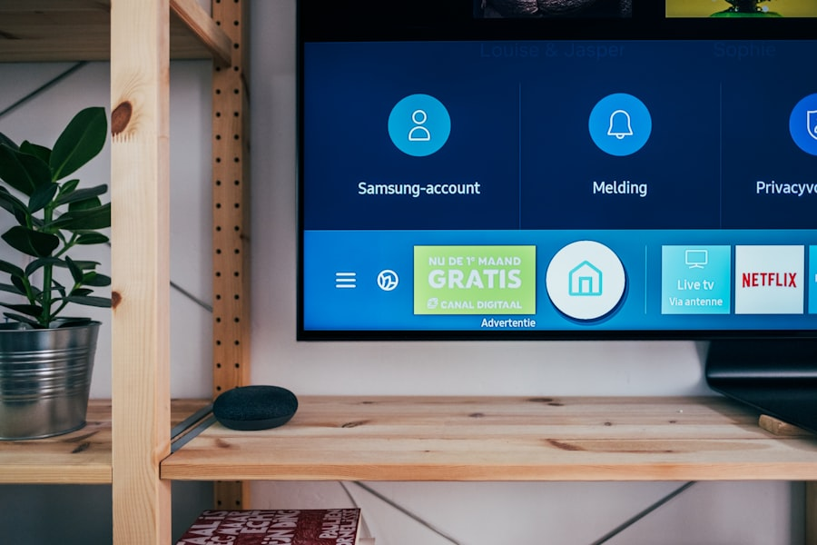
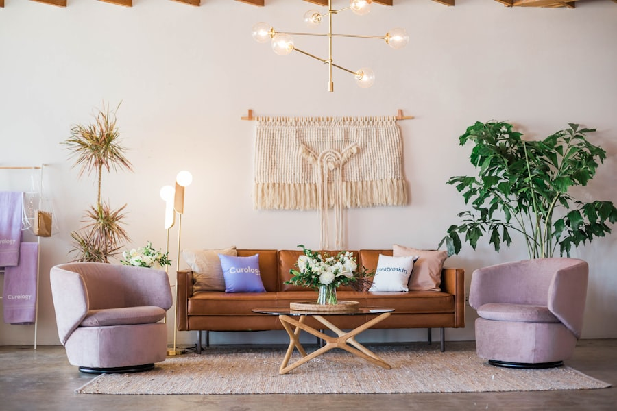

Mobil Teknolojiler
Galaxy telefonlar, tabletler, saatler ve kulaklıklarla bağlantılı bir dijital deneyim sunar.
Teknoloji, tasarım ve günlük yaşam
Samsung, akıllı telefonlardan televizyonlara, ev teknolojilerinden yarı iletken çözümlere kadar geniş ürün ailesiyle dünyanın en bilinen teknoloji şirketlerinden biridir.
Kısa Bakış
Galaxy telefonlar, tabletler, saatler ve kulaklıklarla bağlantılı bir dijital deneyim sunar.

Televizyonlar, monitörler ve ses sistemleri ev eğlencesi deneyimini güçlendirir.

Buzdolabı, çamaşır makinesi ve klima gibi ürünler SmartThings ekosistemiyle birlikte çalışabilir.
Yenilik
Samsung, kullanıcıların iletişim kurmasını, içerik üretmesini, eğlenmesini ve evlerini yönetmesini kolaylaştıran teknolojiler geliştirir. Bu web sitesi, şirketi ve temel çalışma alanlarını tanıtmak için hazırlanmış çok sayfalı bir ödev sitesidir.